VMs/Containers Configuration:
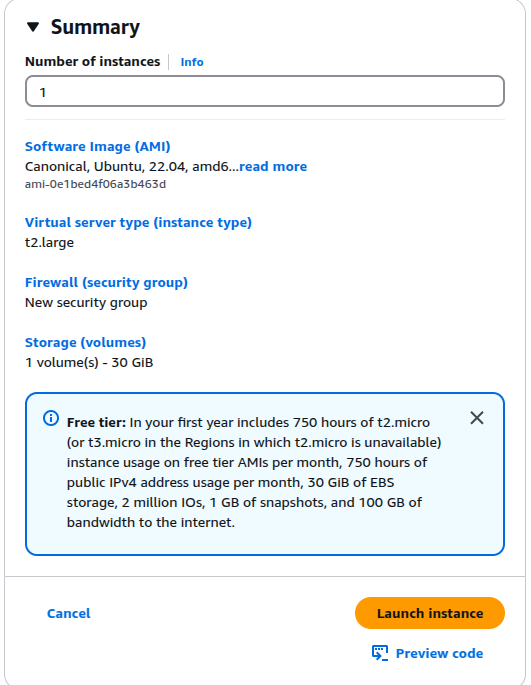
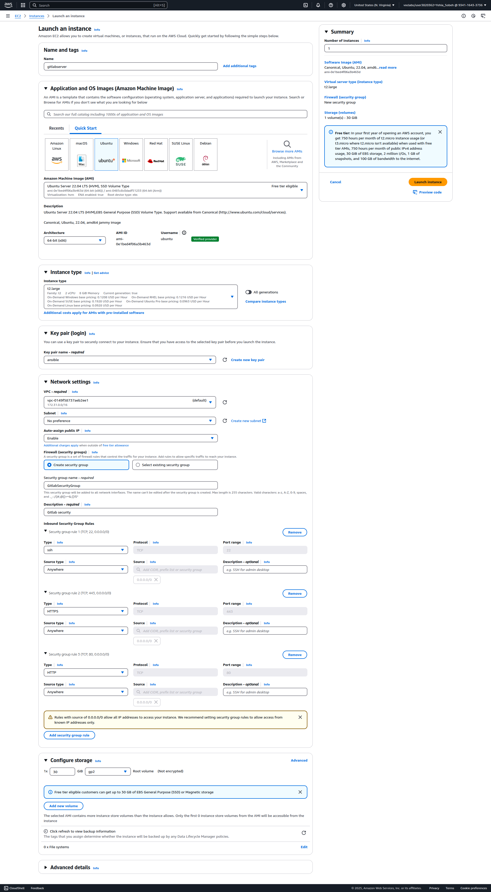
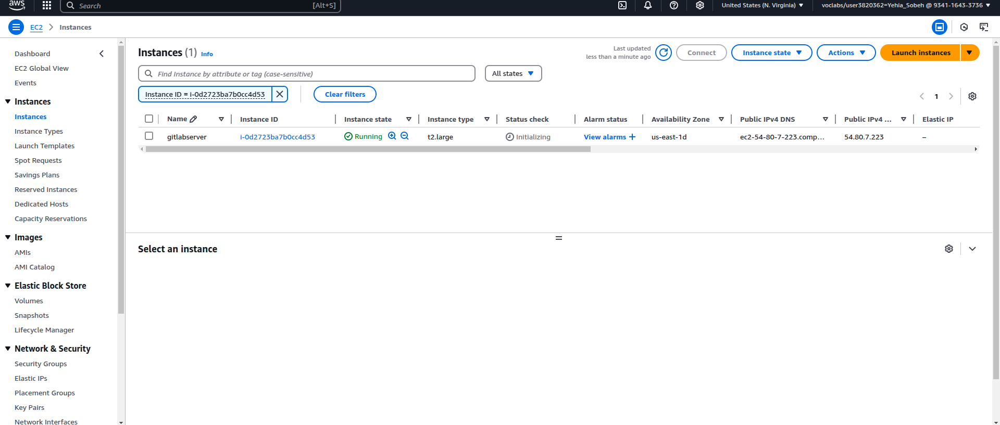
Updated inbound rules:
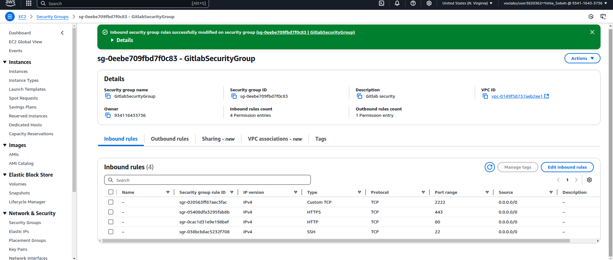
SSH connection and installation commands:
ssh -i "gitlab1.pem" ubuntu@ec2-54-157-39-84.compute-1.amazonaws.com
# Add Docker's GPG key
sudo apt-get update
sudo apt-get install ca-certificates curl
sudo install -m 0755 -d /etc/apt/keyrings
sudo curl -fsSL https://download.docker.com/linux/ubuntu/gpg -o /etc/apt/keyrings/docker.asc
sudo chmod a+r /etc/apt/keyrings/docker.asc
# Add Docker repository
echo "deb [arch=$(dpkg --print-architecture) signed-by=/etc/apt/keyrings/docker.asc] \
https://download.docker.com/linux/ubuntu $(. /etc/os-release && echo "${UBUNTU_CODENAME:-$VERSION_CODENAME}") stable" \
| sudo tee /etc/apt/sources.list.d/docker.list > /dev/null
sudo apt-get update
# Install Docker
sudo apt-get install docker-ce docker-ce-cli containerd.io docker-buildx-plugin docker-compose-plugin
sudo usermod -aG docker $USER
newgrp docker
# Verify
docker -v
docker compose version
docker-compose.yml:
version: '3.8'
services:
gitlab:
image: gitlab/gitlab-ce:latest
container_name: yehia-gitlab
restart: always
hostname: 'gitlab.test.local'
environment:
GITLAB_OMNIBUS_CONFIG: |
external_url 'https://gitlab.test.local'
gitlab_rails['gitlab_shell_ssh_port'] = 2222
nginx['http2_enabled'] = true
nginx['redirect_http_to_https'] = true
nginx['ssl_certificate'] = "/etc/gitlab/ssl/gitlab.test.local.crt"
nginx['ssl_certificate_key'] = "/etc/gitlab/ssl/gitlab.test.local.key"
gitlab_rails['registry_enabled'] = false
mattermost['enable'] = false
gitlab_pages['enable'] = false
gitlab_kas['enable'] = false
letsencrypt['enable'] = false
ports:
- '80:80'
- '443:443'
- '2222:22'
volumes:
- '/srv/gitlab/config:/etc/gitlab'
- '/srv/gitlab/logs:/var/log/gitlab'
- '/srv/gitlab/data:/var/opt/gitlab'
- '/etc/gitlab/ssl:/etc/gitlab/ssl'
shm_size: '256m'
Steps:
mkcert -install
mkcert gitlab.test.local
mv gitlab.test.local.pem gitlab.test.local.crt
mv gitlab.test.local-key.pem gitlab.test.local.key
sudo mkdir -p /etc/gitlab/ssl
sudo cp gitlab.test.local.crt gitlab.test.local.key /etc/gitlab/ssl/
Modified entries:
127.0.0.1 localhost
127.0.1.1 yehia-Aspire-A315-58
3.90.40.223 gitlab.test.local
::1 ip6-localhost ip6-loopback
fe00::0 ip6-localnet
ff00::0 ip6-mcastprefix
ff02::1 ip6-allnodes
ff02::2 ip6-allrouters
Start container:
docker compose up -d
Retrieve root password:
docker exec -it yehia-gitlab cat /etc/gitlab/initial_root_password
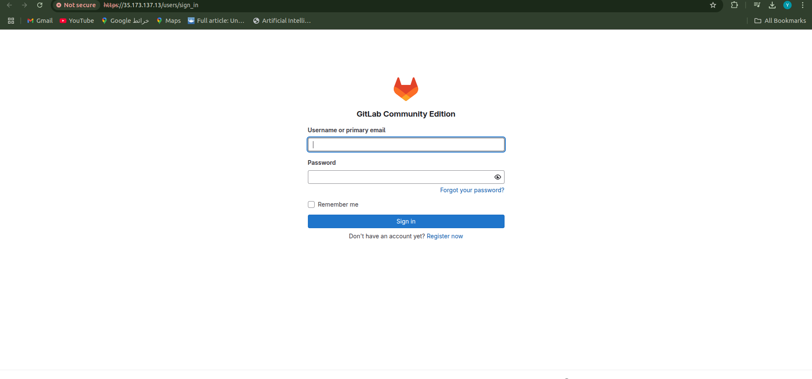
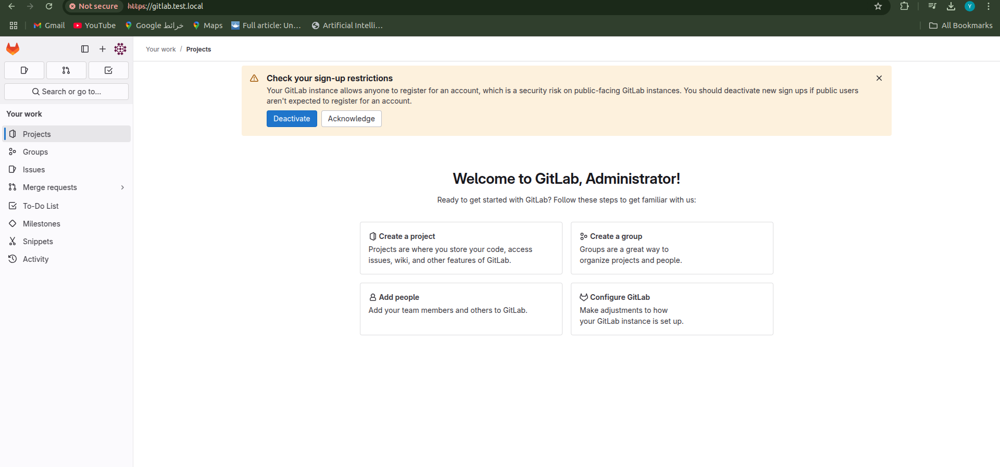
Creating Repository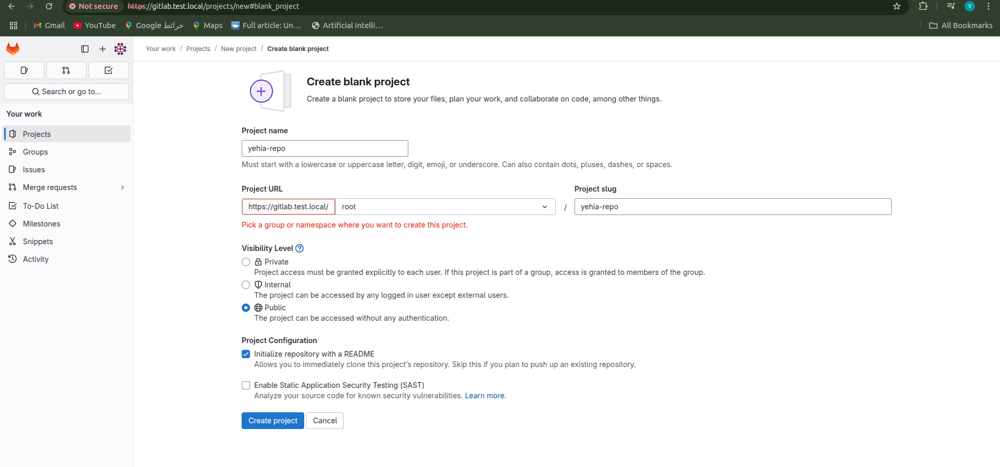
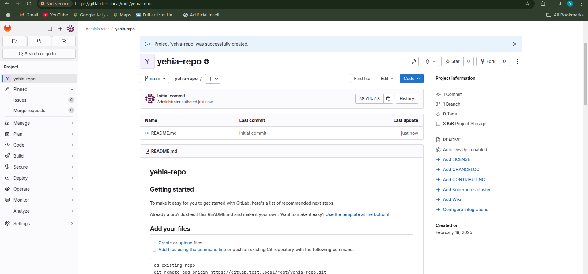
Install GitLab Runner:
curl -L https://packages.gitlab.com/install/repositories/runner/gitlab-runner/script.deb.sh | sudo bash
sudo apt-get install gitlab-runner
gitlab-runner --version
sudo systemctl status gitlab-runner
Register Runner:
gitlab-runner register --url https://gitlab.test.local --token glrt-t3_4vJ_REAs8j2TH3vGnX3f
# Selected executor: shell
Start service:
gitlab-runner run
sudo systemctl start gitlab-runner
sudo systemctl enable gitlab-runner
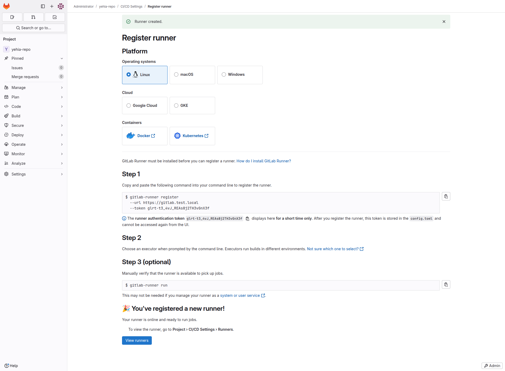
git clone https://github.com/appsecco/DVJA.git
cd DVJA
rm -rf .git
git init
git add .
git commit -m "Initial commit"
git remote add origin https://gitlab.test.local/root/yehia-repo.git
git branch -M main
git pull --rebase origin main
git add *
git rebase --continue
git push -u origin main
Pipeline file:
stages:
- test
semgrep-sast:
stage: test
script:
- semgrep --config=auto --json > semgrep-report.json
artifacts:
paths:
- semgrep-report.json
rules:
- if: $CI_COMMIT_REF_NAME == "main"
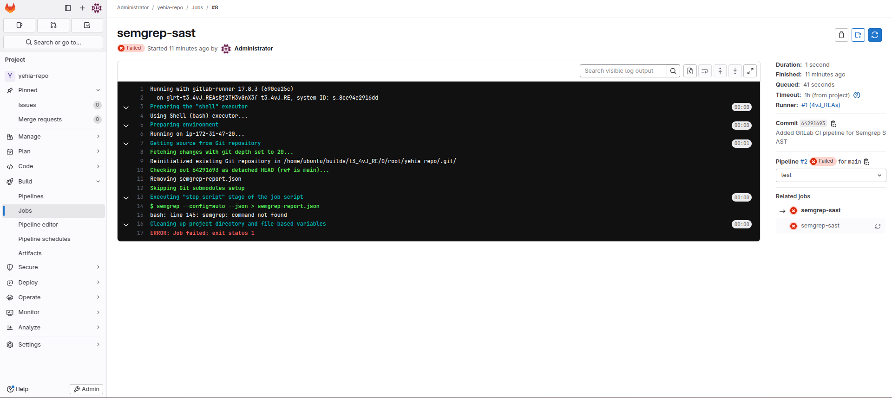
Post-installation fix:
sudo apt install semgrep
echo "Updated pipeline" >> README.md
git add README.md
git commit -m "Triggering CI/CD pipeline"
git push origin main
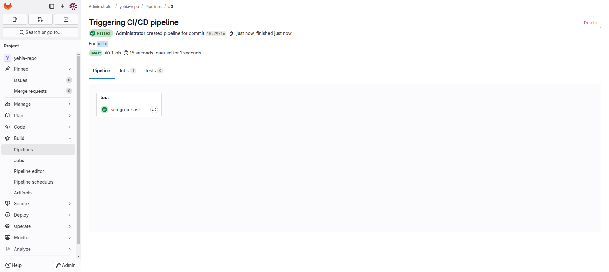
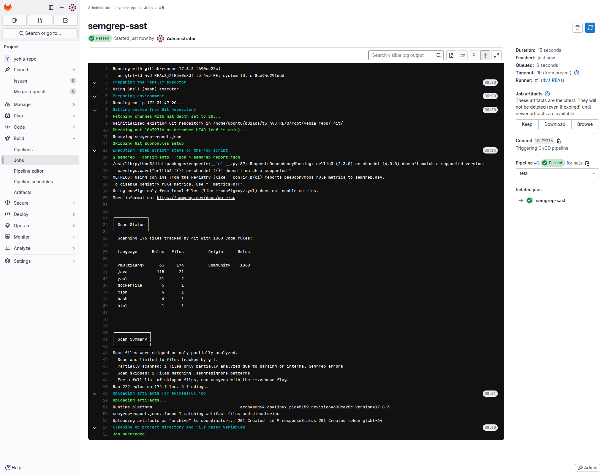
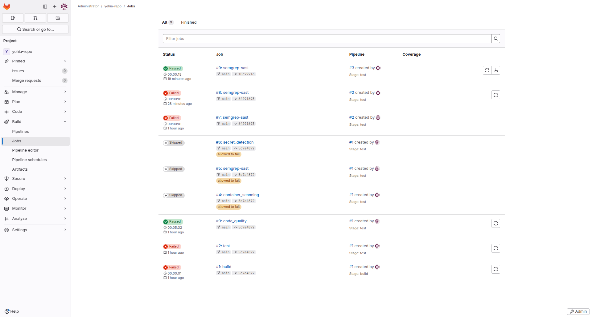
After installing the artifacts and make it readable the following result i concluded
| Vulnerability | File | Line | Severity | Solution | References |
|---|---|---|---|---|---|
| Missing non-root user in Dockerfile | Dockerfile | 17 | ERROR | Add non-root user: RUN adduser --disabled-password appuser USER appuser | OWASP A04 |
| Privilege escalation risk in Docker Compose | docker-compose.yml | 3 | WARNING | Add security_opt: no-new-privileges:true | Docker Security Cheat Sheet |
| Writable root filesystem in Docker Compose | docker-compose.yml | 3 | WARNING | Set read_only: true | Docker Read-Only FS |
| SQL Injection | ProductService.java | 48 | ERROR | Use PreparedStatement: stmt.setString(1, userInput); | OWASP SQL Guide |
| SQL Injection | UserService.java | 75 | ERROR | Use PreparedStatement: stmt.setString(1, userInput); | Java Docs |
| Semgrep Report Syntax Error | semgrep-report.json | 1 | WARN | Regenerate report or update Semgrep | Semgrep Docs |